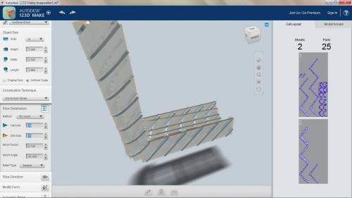
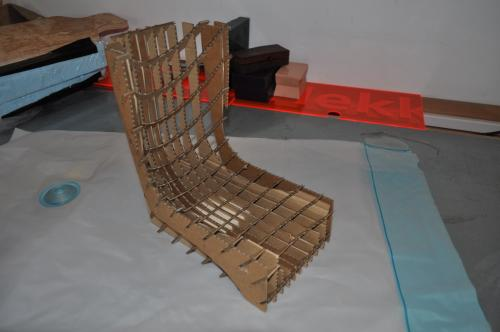
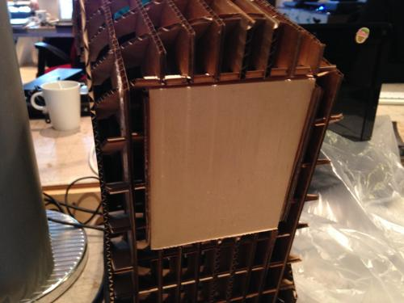
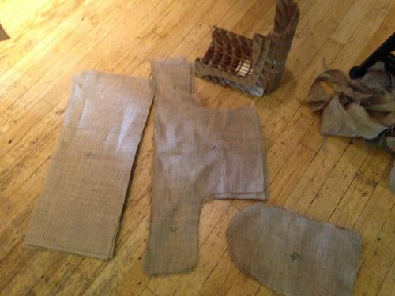
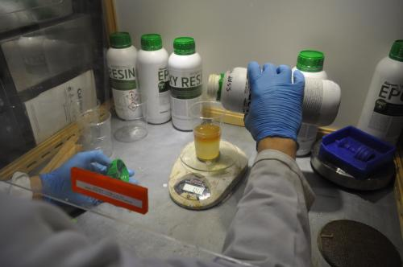
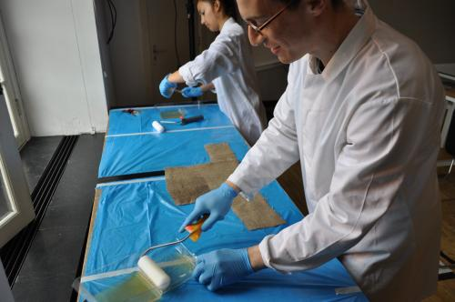
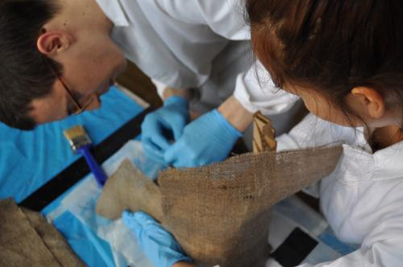
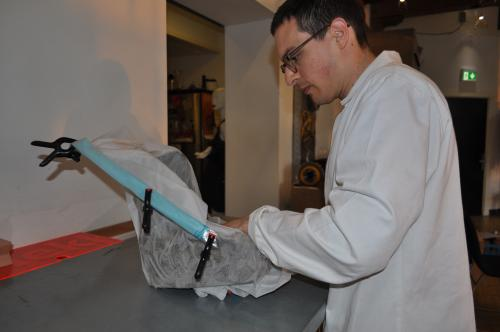
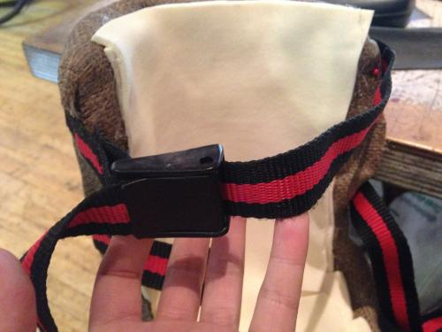
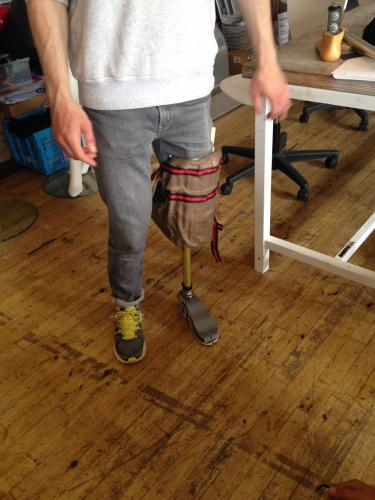

In order to be able to test the prosthesis we made a device which enables non-amputated people to walk with a prosthetic leg. The design of the Kneewalker is based on existing devices and was modified to be suitable for fabrication in a Fablab.
1. I measured the legs of different people and calculated the average size.
2. Based on these dimensions I made a 3d model of the Kneewalker in RHINO.
3. With the software 123D MAKE, I translated the 3d model into a 2,5d model (interlocked slices) and generated a cutting template for the laser.
- 
- 4. With the lasercutter I cut the pieces from 3mm cardboard and assembled the model.
- 
- 5. At the bottom of the model I inserted a 12mm wooden plate.
- 
- 6. I cut pieces from “Jute” fabric which should cover the whole model 3 times (3 x top, bottom, front).
- 
- 7. Then we prepared the resin (Supersap) and the workspace. The resin and the hardener have to be mixed according to the instructions and can be used for approximately 20 min after mixing. It is important to wear protection gloves and masks and make sure that there is no direct contact with the resin.
- 
- 8. Then we used rollers to spread the mixed resin onto the fabric pieces. The combination of the resin and the fabric created a strong composite material.
- 
- 9. We applied the pieces to the cardboard model and fixated them with needles (Make sure the needles don’t stick out)
- 
- 10. Afterwards we bagged the model with a vacuum bag and enclosed it and let it dry for a week.
- 
- 11. Then I added foam padding at the inside of the Kneewalker and attached Velcro straps.
- 
- 12. I screwed the adapter for the prosthesis into the wooden plate at the bottom of the Kneewalker and then attached the prosthesis.

RESULT
We used the Kneewalker to test the Prosthesis and it was a great way of learning and understanding the function of a prosthetic device. This experiment enabled me to get much more insights on the mechanics of prosthesis than any desktop research.
Unfortunately the composite broke after 2 days of trials. The result shows that 3 layers where not enough to resist a repeatedly body load. The weak point was the connection where the screws were positioned.

This work is licensed under a Attribution Non-commercial Share Alike Creative Commons license